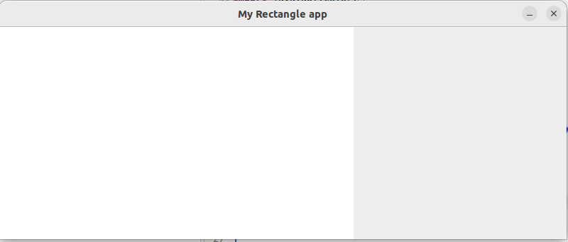
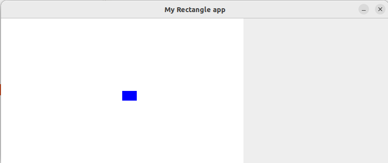
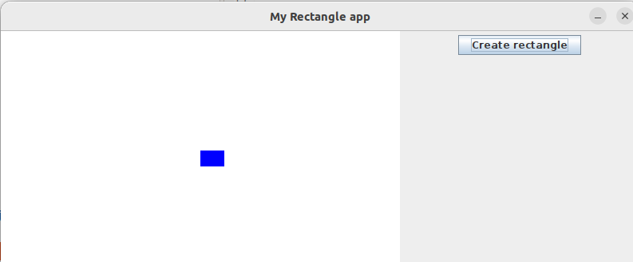

Cours 5 : Applications graphiques et design MVC
Viviane Pons
Master BIBS Université Paris-Saclay
“Hello World” Swing
JFrame fenetre = new JFrame();
fenetre.setTitle("Première fenêtre en java");
fenetre.setBounds(0,0,300,100);
fenetre.setDefaultCloseOperation(JFrame.EXIT_ON_CLOSE);
JPanel panel = new JPanel();
JLabel helloWorld = new JLabel("Hello World !");
panel.add(helloWorld);
fenetre.getContentPane().add(panel);
fenetre.setVisible(true);Ajout d’un bouton
JFrame fenetre = new JFrame();
fenetre.setTitle("Première fenêtre en java");
fenetre.setBounds(0,0,300,100);
fenetre.setDefaultCloseOperation(JFrame.EXIT_ON_CLOSE);
JPanel panel = new JPanel();
JLabel helloWorld = new JLabel("Hello World !");
JButton bouton = new JButton("Je suis un bouton");
panel.add(helloWorld);
panel.add(bouton);
fenetre.getContentPane().add(panel);
fenetre.setVisible(true);Et ensuite ? Comment faire pour gérer le clic sur le bouton ? Plus généralement, comment lier l’interface graphique au reste du programme ?
Qu’est-ce que les design patterns ? Ou patrons de conception en français : ce sont des solutions à des problèmes
Pour Modèle-Vue-Contrôleur ou en anglais Model-View-Controller
GUI en anglais pour
“Graphical User Interface”framework
associésOrganiser son architecture et son code en séparant trois rôles :
Pourquoi ? Organisation, modularité, maintenabilité, séparation des compétences et expertises
Nous allons concevoir une petite application graphique en suivant ce modèle. Cela nous permettra de voir :
SwingSwingSwingLe code final de l’application exemple est disponible ici.
Le but de l’application est de contrôler le dessin d’un rectangle dans une fenêtre. Le modèle ici est une classe qui représente le rectangle.
Cette classe contient des champs pour contrôler la position et la taille du rectangle à l’intérieur d’une plus grande boite (gérée avec des paramètres statiques).
Elle contient aussi des méthodes pour déplacer et redimensionner le rectangle tout en vérifiant qu’on reste dans la grande boite.
Important : en aucun cas, le modèle ne doit dépendre de l’interface graphique, ni du contrôleur. Il est entièrement indépendant. C’est ce qui assure la modularité : on peut conserver le modèle tel quel si on change d’interface graphique. On peut d’ailleurs avoir plusieurs interfaces graphiques pour un seul modèle.
L’objectif est maintenant de construire la “vue” et le “contrôleur” qui vont correspondre à ce modèle.
Pour la vue, on commence par créer une interface
RectangleAppView qui va lister les méthodes spécifiques
dont on aura besoin. Cela va permettre de séparer ce qui correspond à
notre architecture spécifique et ce qui vient des éléments
Swing. On garde ainsi un code plus modulaire.
Pour l’instant, l’interface ne contient que 2 méthodes : on l’enrichira au fur et à mesure.
Note : la vue ne doit que “voir” le modèle, elle ne doit pas directement le modifier (ça c’est le rôle du controleur). Pour une meilleure encapsulation, on pourrait donc lui passer seulement un objet qui est capable de “lire” les données mais pas d’écrire.
RectangleAppFrameOn va maintenant créer les vrais classes qui vont implémenter notre
vue. La classe de la fenêtre principale hérite de JFrame et
implémente notre interface.
Que mettre dans cette classe ?
Un constructeur :
JPanelSoit à la création, soit à l’initialisation, il faut créer les composants graphiques.
Une fenêtre Swing est organisée en “panneaux” (classe
JPanel). Ces panneaux peuvent contenir d’autres panneaux
ainsi que des composants type boutons, texte, etc.
Ici, on va créer deux panneaux : un pour les boutons et les options et un pour dessiner le rectangle.
Le panneau de dessin du rectangle aura des besoins graphiques
spécifiques, on va créer une classe qui hérite de
JPanel.
RectanglePanelpublic class RectanglePanel extends JPanel {
private Rectangle rectangle;
public RectanglePanel(int width, int height) {
super();
setPreferredSize(new Dimension(width, height));
setBackground(Color.WHITE);
}
...
} C’est le panneau du rectangle qui a besoin de voir le modèle donc c’est lui qui stocke le rectangle. A la création, on lui donne la bonne dimension et on passe sa couleur de fond à blanc.
Revenons à RectangleAppFrame. On va stocker deux
variables d’instances qui pointent sur les deux panneaux.
public class RectangleAppFrame extends JFrame implements RectangleAppView {
RectanglePanel rectanglePanel;
JPanel buttonPanel;
public RectangleAppFrame(String name, int boundx, int boundy) {
...
rectanglePanel = new RectanglePanel(boundx, boundy);
buttonPanel = new JPanel();
buttonPanel.setPreferredSize(new Dimension(300, boundy));
add(rectanglePanel, BorderLayout.WEST);
add(buttonPanel, BorderLayout.EAST);
pack();
}On fabrique les panneaux, on donne les bonnes dimensions au panneau
des boutons. On ajoute les panneaux à la fenêtre principale (qui
contient aussi un panneau). Puis on appelle pack() qui va
automatiquement calculer la taille de la fenêtre en fonction de la
taille de ses panneaux.
Le positionnement des composants à l’intérieur d’un panneau est
défini par son “layout”. La fenêtre principale possède par défaut un
panneau dont le layout est “Border layout” : cela signifie qu’on peut
ajouter 5 sous-panneaux (est, ouest, nord, sud et centre). Par défaut,
les JPanel utilisent par défaut un layout appelé
FlowLayout où les éléments se placent les uns à la suite
des autres de façon assez naturelle. Il existe d’autres layout
(GridLayout, BoxLayout, etc.).
Je ne vous donne pas des explications détaillées sur le fonctionnement des layout : à vous de chercher et vous renseigner quand vous en aurez besoin.
RectangleAppViewpublic class RectangleAppFrame extends JFrame implements RectangleAppView {
...
@Override
public void initialize() {
setVisible(true);
}
@Override
public void setRectangle(Rectangle rectangle) {
rectanglePanel.setRectangle(rectangle);
}
}L’initialisation ne fait que rendre la fenêtre visible. La méthode
setRectangle délègue au panneau rectangle.
On crée une classe RectangleController
public class RectangleController {
public static final int BOUNDX = 500;
public static final int BOUNDY = 300;
private Rectangle rectangle;
private RectangleAppView view;
public RectangleController() {
Rectangle.setMaxx(BOUNDX);
Rectangle.setMaxy(BOUNDY);
view = new RectangleAppFrame("My Rectangle app", BOUNDX, BOUNDY);
}
public void initialize() {
view.initialize();
}
}La classe contient un pointeur sur le modèle et un sur la vue. Pour l’instant, elle initialise les valeurs statiques du modèle et la vue.
La fonction main va servir à lancer l’application, ce
qui se fait ici en lançant la méthode initialize du
contrôleur. On va le faire de cette façon :
SwingUtilities.invokeLater(() -> new RectangleController().initialize());Mais c’est quoi cette façon bizare ? C’est à cause des
threads. Pour simplifier, les threads sont les différents
sous-programmes de votre programme. Et pour que ça marche bien, le
graphique doit être géré dans un thread à part. L’appel à
SwingUtilities permet un appel différé par le thread en
question. A votre niveau, vous n’avez pas besoin de comprendre le
détail. Pour des applications graphiques simples, le multi
threading se passe sans que ayez à vous en soucier en dehors de
cette ligne d’appel.
On a maintenant les éléments minimums de la vue et du contrôleur pour lancer notre programme. Pour l’instant, il ne fait qu’ouvrir une fenêtre avec un grand panneau blanc et un plus petit panneau gris. Il n’y a aucun rectangle, c’est pas ultra intéressant…

Mais on y arrive !
Le but est de contrôler un rectangle : pour ça il faut qu’on crée et qu’on dessine ce rectangle.
A l’initialisation du contrôleur, on va créer un nouveau rectangle et le passer à la vue.
Dans la classe RectanglePanel, on va faire en sorte de
dessiner le rectangle. Pour cela on surcharge (override) la
méthode paintComponent héritée de JPanel.
Maintenant, on voit un rectangle bleu apparaître sur fond blanc quand on lance l’application. (Ouah… Trop beau..)

Ca reste assez peu intéressant, comment contrôler le rectangle ?
On va ajouter un bouton pour faire apparaître le rectangle. Dans
Swing, il y a une classe spéciale pour les boutons JButton.
On va créé une variable dans la vue et l’ajouter au panneau des
boutons.
L’application ressemble maintenant à ça :

Mais comment faire pour qu’il se passe quelque chose quand on appuie sur le bouton ?
On va créer le moyen de recevoir des actions depuis la vue. Pour
cela, on crée un enum avec la liste des actions possibles
(pour l’instant une seule action).
Et dans la classe RectangleController lui-même, on
implémente de quoi recevoir l’action
Enfin, on rajoute un lien vers le contrôleur depuis la vue, pour que la vue puisse envoyer des actions
Le contrôleur est stocké dans un champs privé de la vue. Au moment
d’initialiser la vue dans RectangleController, on lui
envoie le contrôleur
Remarque : la seule interaction que la vue doit avoir avec le contrôleur, c’est d’envoyer une action. Pour plus de modularité, on pourrait donc stocker uniquement “la partie” du contrôleur qui reçoit les actions (par un objet ou une interface dédiée)
On a besoin que quand on clique sur le bouton, ça envoie la bonne action au contrôleur
ListenersSuivant le principe du MVC, Swing sépare l’objet
graphique bouton de l’action enclenchée par le clic. Tout le principe de
l’interface graphique est basée sur l’idée “d’évènements” qui sont
lancés par les composants et “écoutés” par d’autres classes. C’est un
framework qui est directement inspiré par la philosophie du MVC et que
l’on retrouve, sous une forme ou une autre, dans la plupart des
bibliothèques graphiques.
Ici, on a rajouté une couche supplémentaire avec notre contrôleur
pour pouvoir recevoir des actions de façon indépendante de
l’architecture de Swing.
Dans notre application, on va créer une classe
ButtonListener (dans la partie vue) qui servira à écouter
nos différents boutons
public class ButtonListener implements ActionListener {
private final RectangleController controller;
private final RectangleAction action;
public ButtonListener(RectangleController controller, RectangleAction action) {
this.controller = controller;
this.action = action;
}
@Override
public void actionPerformed(ActionEvent actionEvent) {
controller.receiveAction(action);
}
}Au moment de la création du bouton, on le relie à un écouteur de boutons avec la bonne action
Donc maintenant, le contrôleur ne crée le rectangle que lorsqu’il en reçoit l’ordre et le bouton est configuré pour envoyer l’ordre au moment du click par le biais de son “écouteur”.
Donc tout est parfait !
POURQUOI ? Désespoir
Mais non, il y a une raison simple : la vue ne sait pas que quelque chose a changé, elle a besoin d’être mise à jour.
On rajoute une méthode update dans l’interface et dans
la classe :
La méthode update appelle la méthode
repaint du JPanel
rectanglePanel.
Et bien sûr, on appelle update depuis le contrôleur.
public void receiveAction(RectangleAction action) {
switch (action) {
case CREATE: createRectangle(); break;
}
view.update();
}Maintenant, ça marche !
Remarque : vous aurez peut-être remarqué qu’il y a
ici deux couches de “contrôle” : les ActionListener de
Swing et l’écoute de nos actions spécifiques dans notre
contrôleur à nous.
En effet, les ActionListener sont déjà des mini
contrôleurs. On pourrait décider de directement implémenter les
interfaces de Swing avec notre contrôleur. Cependant, cela rendrait
notre architecture très dépendantes des interfaces définies par
Swing.
La solution qu’on propose ici permet plus de modularité :
On va créer un bouton pour faire disparaître le rectangle.
Pour cela une crée une nouvelle action dans le contrôleur
et un nouveau bouton dans la vue
public class RectangleAppFrame extends JFrame implements RectangleAppView {
...
JButton makeRectangleBtn;
JButton deleteRectangleBtn;
...
@Override
public void initialize() {
makeRectangleBtn = new JButton("Create rectangle");
makeRectangleBtn.addActionListener(new ButtonListener(controller, RectangleAction.CREATE));
deleteRectangleBtn = new JButton("Delete Rectangle");
deleteRectangleBtn.addActionListener(new ButtonListener(controller, RectangleAction.DELETE));
buttonPanel.add(makeRectangleBtn);
buttonPanel.add(deleteRectangleBtn);
...
}
...
}C’est super ! Ca marche !
Encore une fois, on va essayer de faire ça de façon générique en séparant ce qui relève du contrôleur de ce qui relève de la vue.
On va créer une liste d’états possibles pour la vue avec un enum
Et dans l’intervace RectangleAppView, on ajoute une
méthode pour modifier l’état de la vue.
On implémente cette méthode dans la vue en faisant apparaître / disparaître les éléments que l’on souhaite
private void withRectangle() {
makeRectangleBtn.setVisible(false);
deleteRectangleBtn.setVisible(true);
}
private void withoutRectangle() {
makeRectangleBtn.setVisible(true);
deleteRectangleBtn.setVisible(false);
}
@Override
public void setViewState(ViewState state) {
switch (state) {
case WITH_RECTANGLE: withRectangle();
break;
case WITHOUT_RECTANGLE: withoutRectangle();
break;
}
}Le contrôleur s’occupe ensuite demander à la vue l’état souhaité.
De la même façon, on peut rajouter des boutons correspondants à toutes les actions suivantes :
On va créer une implémentation de la classe KeyListener
de Swing pour envoyer ces mêmes actions avec les touches du
clavier.
Il y a 3 méthodes à implanter pour cette interface :
public void keyTyped(KeyEvent keyEvent);
public void keyPressed(KeyEvent keyEvent)
public void keyReleased(KeyEvent keyEvent) L’objet KeyEvent de swing permet de récupérer la touche
du clavier qui a été pressée.
On laisse keyTyped et keyReleasead vides et
on implémente keyPressed
public void keyPressed(KeyEvent keyEvent) {
switch(keyEvent.getKeyCode()) {
case KeyEvent.VK_LEFT:
controller.receiveAction(RectangleAction.MOVE_LEFT);
break;
case KeyEvent.VK_RIGHT:
controller.receiveAction(RectangleAction.MOVE_RIGHT);
break;
case KeyEvent.VK_UP:
controller.receiveAction(RectangleAction.MOVE_UP);
break;
case KeyEvent.VK_DOWN:
controller.receiveAction(RectangleAction.MOVE_DOWN);
break;
case KeyEvent.VK_C:
controller.receiveAction(RectangleAction.DECREASE_WIDTH);
break;
case KeyEvent.VK_V:
controller.receiveAction(RectangleAction.INCREASE_WIDTH);
break;
case KeyEvent.VK_B:
controller.receiveAction(RectangleAction.DECREASE_HEIGHT);
break;
case KeyEvent.VK_N:
controller.receiveAction(RectangleAction.INCREASE_HEIGHT);
break;
}
}Ensuite, dans RectangleAppFrame, on s’assure de
public class RectangleAppFrame extends JFrame implements RectangleAppView {
...
RectangleKeyListener keyListener;
@Override
public void initialize() {
...
keyListener = new RectangleKeyListener(controller);
...
}
private void withRectangle() {
...
addKeyListener(keyListener);
}
private void withoutRectangle() {
...
removeKeyListener(keyListener);
}
...
}Il faut aussi, pour des raisons techniques, spécifier explicitement que la fenêtre est “focusable”
On récupère le focus à chaque fois qu’on active l’écoute clavier
Ainsi qu’à chaque mise à jour de la vue (car sinon le focus reste sur les boutons)
On veut pouvoir déplacer le rectangle à la souris. Pour cela, on peut
implanter l’interface MouseMotionListener de
Swing
(Note : pour traiter les simples clics de la souris, on utilisera à
la place MouseListener)
L’idée : lors d’un évènement mouseDragged on vérifiera
si on est à l’intérieur ou hors du rectangle. Si on est dans le
rectangle, on calcule le changement de position par rapport à
l’évènement précédent et on envoie une action au contrôleur. En
analysant le problème, on réalise que :
Dans le contrôleur, on crée donc :
(l’action MOVE a été ajoutée à la liste des
RectangleAction)
Côté “écouteur”, construction :
public class RectangleMouseListener implements MouseMotionListener {
private final RectangleController controller;
private Rectangle rectangle;
private boolean startDrag;
int prevx;
int prevy;
public RectangleMouseListener(RectangleController controller) {
this.controller = controller;
startDrag = false;
}
public void setRectangle(Rectangle rectangle) {
this.rectangle = rectangle;
}
...
}Implémentation :
public class RectangleMouseListener implements MouseMotionListener {
...
@Override
public void mouseDragged(MouseEvent mouseEvent) {
if(! startDrag) {
int x = mouseEvent.getX();
int y = mouseEvent.getY();
if(rectangle.insideRectanle(x, y)) {
startDrag = true;
prevx = x;
prevy = y;
}
} else {
int diffx = mouseEvent.getX() - prevx;
int diffy = mouseEvent.getY() - prevy;
controller.receiveAction(RectangleAction.MOVE, diffx, diffy);
prevx = mouseEvent.getX();
prevy = mouseEvent.getY();
}
}
@Override
public void mouseMoved(MouseEvent mouseEvent) {
startDrag = false;
}
}Pour que ça fonctionne, il faut que l’écouteur soit créé dans la vue et qu’on lui envoie le rectangle
public class RectangleAppFrame extends JFrame implements RectangleAppView {
...
RectangleMouseListener mouseListener;
...
@Override
public void initialize() {
...
mouseListener = new RectangleMouseListener(controller);
...
}
@Override
public void setRectangle(Rectangle rectangle) {
rectanglePanel.setRectangle(rectangle);
mouseListener.setRectangle(rectangle);
}
}Et qu’on ajoute l’écouteur au bon composant au moment adéquat : ici, c’est le rectanglePanel qui doit “écouter” la souris.
Les classes “écouteuses” ne sont utilisées que par
RectangleAppFrame et ont souvent besoin d’accéder à des
champs de l’instance (comme le contrôleur qu’on a à chaque fois passé
comme un champ privé). On pourrait en fait en faire des classes
internes qui sont régulièrement utilisées dans les interfaces
graphiques en particulier.
A votre niveau, vous n’êtes jamais obligé de l’utiliser mais vous pourriez tomber dessus dans des architectures un peu plus compliquées.
Dans notre architecture :
Dans notre architecture :
Ceci n’est qu’une possibilité d’architecture, ce ne sera pas forcément la réponse à chaque fois.
Par exemple, dans notre architecture, la vue possède un pointeur sur le modèle et sur le contrôleur : il n’y a pas de garantie dans l’architecture même qu’elle ne va pas “outrepasser” ses droits.
On peut aussi décider que le contrôleur écoute directement les composants pour agir sur le modèle (dans ce cas, le contrôleur dépend de l’architecture de l’interface graphique) et que la vue n’a pas accès au contrôleur.
Ce qu’il faut garder à l’esprit : c’est une philosophie générale qu’il faut essayer d’adapter à bon escient. Le principe est de séparer les rôles.
Comment créer une interface graphique ?
Une interface graphique est un système de communication avec l’utilisateur final utilisant un affichage dans une fenêtre et réagissant aux actions de l’utilisateur tels que les clics et le clavier.
Côté programmation, cela demande d’interagir avec le système d’exploitation qui gère les différentes applications et les actions de l’utilisateur.
Java offre plusieurs bibliothèques :
la bibliothèque historique
AWTpour “Abstract Window Toolkit” : interfaçage bas niveau avec le système d’exploitationla bibliothèque
Swing: plus indépendante du système d’exploitation mais qui réutilise de nombreux composantsawt– encore très classique même si un peu anciennela bibliothèque
JavaFX: plus récente , architecture plus moderne et plus adaptée aux nouveaux supports (écrans tactiles par exemple). Nouvelle bibliothèque par défautCette année, on travaille avec le classique
Swingcar : encore très utilisé et distribué plus largement.